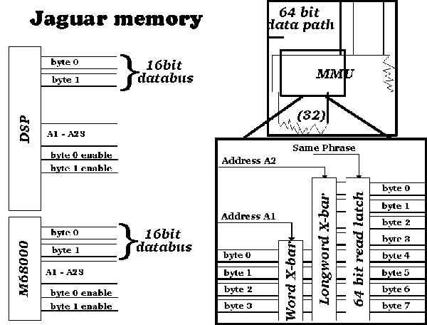

# ------------------------------------------------------------------- # JAGUAR (c) Copyright 1996 Nat! & KKP # ------------------------------------------------------------------- # These are some of the results/guesses that Klaus and Nat! found # out about the Jaguar. Since we are not under NDA or anything from # Atari we feel free to give this to you for educational purposes # only. # Thanks to Bastian Schick for the information about the 16-bit # DSP interfacing and the ADCs. # Thanks go to marz@haari.mayn.de for the priority info. # # Please note, that this is not official documentation from Atari # or derived work thereof (both of us have never seen the Atari docs) # and Atari isn't connected with this in any way. # # Please use this informationphile as a starting point for your own # exploration and not as a reference. If you find anything inaccurate, # missing, needing more explanation etc. by all means please write # to us: # nat@zumdick.ruhr.de # or # kp@eegholm.dk # # If you could do us a small favor, don't use this information for # those lame flamewars on r.g.v.a or the mailing list. # # HTML soon ? # ------------------------------------------------------------------- # $Id: general.html,v 1.24 1997/11/16 18:14:40 nat Exp $ # -------------------------------------------------------------------No gospel contained here !!
A couple of general notes on the Jaguar. Please note about the bitness issue, that this is just our general take of the scene. The bitness is the way the chip 'feels' like (to us).
The Jaguar consists of these major parts:
=========================================
Processors:
=-=-=-=-=-=
a) 32/16 bit 68000 processor that is used to bootstrap the system.
Feels like a 32bit chip (in many respects) with a 16 bit
memory interface
b) 32/64 bit GPU risclike processor that is the 'heart' of the
system. The chip feels like a 32 bit chip with an 64 bit
memory interface. This one has 4Kbytes of local memory for
instruction and data.
c) 32/16 bit DSP chip, also risclike. The RISC itself is straight
32 bit. The DSP has a 16 bit ! memory interface and 8KB of
local memory for instruction and data.
d) a 64 bit objectprocessor (OP) that feeds the video chip
Devices:
=-=-=-=
a) a 64 bit Blitter
Input/output stuff:
=-=-=-=-=-=-=-=-=-=
a) A videochip capable of displaying 16bit Cry/RGB or 24bit RGB
pixels. Tightly coupled to the OP.
b) Digital joystickinterface + 2 ADCs on the joystick ports
for analog input. (The ADCs do not exist in later models
apparently as a costcutting measures)
c) 2 16-bit DACs for sound production
d) a fast synchronous serial communications channel
e) a slower asynchronous serial communications channel
Systemstructure:
================
Consider the Jaguar to be the GPU, the OP, the Blitter, the memory
and the videochip.
You got here a 64 bit system communication thing happening. All
data is passed along the bus in 64 bit quantities (also known as
a phrase). Since you can pass data around the bus at a speed of
ca. 13.3Mhz (?) you get a thruput of a little more than 100MB/s.
RAM:
=-=
The RAM is monolithic, in that there's no division between VideoRAM
and normal RAM. Usually the OP fetches the data from memory scanline by
scanline and stuffs it into two small videochip linebuffers. The
videochip only fetches data from there. It does not have access to
the main memory.
RAM is accessed by the memory manager in a pagewise (2K) fashion.
Consecutive memory addresses that reside in the same RAM page, can
be accessed faster using column addressing only.
RAM chips are conventionally addressed two dimensionally by selecting
"row addressing" and addessing the row you want (one cycle) then selecting
"column addressing" and addressing the column you want (another cycle).
Now you have addressed the memory cell and can read or write the data
(yet another cycle).
I.e. you need at least three cycles to handle memory. (Or rather the MMU,
which does all this for you :))
Now if the next address you want to access (read or write) happens to
be in the same row as the previous one selected you can shorten the
sequence by just selecting a new column and the reading / writing data,
thereby saving a cycle.
The RAMs in the jaguar are organized in 1024 rows of 2K per column
(in the 2MB model).
In simple terms, memory access will be much faster if you access memory
sequentially. Blitting across pages is therefore MUCH slower since every
read and write will not benefit from the page access.
Any access to memory that needs RAS and CAS addressing is considered to
be a page miss.
Gateways:
=-=-=-=-=
Gateway is most certainly a misnomer, the devices are placed on the
system bus, but only access a fraction of the bus full width.
There are "gateways" out of the main system to connect peripheral
chips to it. There is one 32 bit "gateway" to the ROMs and two
16 bit gateways to the 68000 and the DSP (yikes!). Since the 68000
doesn't have a cache, just keeping it running in an idle loop
will probably impede maximum performance of the system.
The gateways are most probably unbuffered, which would mean that
a 16 bit access by the 68000 is just as costly as a 64 bit access
by the GPU.

The DSP is connected/integrated with some peripheral devices,
that provides serial communications capability, joystick interfacing
and hardware timers.
When the DSP reads from JERRY registers it doesn't access them over
the system bus, it reads them directly.
Priorities:
=-=-=-=-=-=
These are the bus priorities of the various entities on the system
bus. Priority means, that as soon as the current bus action is over,
and several devices want to access the bus, the one with the highest
priority is being served!
Priority Device Activity Note
----------+-------------+-------------+-------------------
10 external unknown daisychained busmaster
9 MMU refresh
8 DSP DMA dangerous
7 GPU DMA "
6 Blitter BUSHI "
5 OP normal
4 DSP normal
3 68K IRQ
2 GPU normal
1 Blitter normal
0 68K normal
The 68k is responsible for a lot of bus traffic, because it is
executing from memory, reading data from memory and read writing into
memory. If the 68K was "top dog" in this scheme, the rest of the
system would be crawling along. Therefore the 68000 is the least
priorised entity on the bus, and only gets those bus cycles,
that are left over from others. BUT, when the 68000 is using cycles
heavily f.e. for a RMW operation, or a 32 bit move, then the 68000
is likely to steal a few cycles from the other chips, by virtue of
just taking too long.
The priorities 6-8 are considered "dangerous". When a dangerous operation
takes place and the OP wants to fetch data, the bus is said to hang.
(I don't know whether this can be reproduced reliably). Also even if that
was not the case, It'd be dangerous because the OP might not have enough
time left in the scanline to do its processing.
The "dangerous modes" are also not really necessary (IMO), since when
the OP is not active, you most probably already have the bandwidth you
are trying to get.
Priority 10 is for an extension card. So not of interest here.
Interrupts:
=-=-=-=-=-=
Most interrupts are tied to one of the three processors only, but
a few interrupts can be handled by two or all three processors. Then
two interrupt routines can run at the same time, processing the same
interrupt, if one wishes this to be the case.
The 68000 is raised to a higher priority during IRQ processing, which
it should set back to normal ASAP, so as not to hinder the Blitter
or the GPU.
The DSP/Jerry interrupts are routed thru Jerrys interrupt control scheme
to the 68K.
Endianness: **** WARNING: High Bullshit content ****
=-=-=-=-=-=
[ The endianess shit is my fault. Klaus surely doesn't want to be
associated with this (nat/1996) ]
Bytes are just bytes
Word are two bytes, one being the MSB and the other being the LSB
(most significant byte, least significant byte)
Long words consist of four bytes, being MSB NSB ISB and LSB.
(Most, not so, insignificant, least)
Phrases consist of eight bytes
MSB HSB VSB RSB QSB NSB ISB LSB
(Most, highly, very, really, quite, not so, insignificant, least)
The Jaguar is a bit strange mixture of endianness schemes.
The 68K thinks in Motorola terms MSB NSB ISB LSB (most significant byte,
not so significant byte, insignificant byte and least significant byte)
The OP thinks in terms of ISB LSB MSB LSB occasionally, for example
when using addresses, but also the right - Motorola >grin< - way
when examining phrases: MSB HSB VSB RSB QSB NSB ISB LSB.
The GPU, the DSP and the memory controller seem to be configurable in
their endianness.
Technical Data
==============
Jerry/TOM 26.591 MHz
68K 13.296 MHz
RAM 2MB (as in 1024*1024 bytes)
Bandwidth:
106.4 Mio bytes/s or 101.5 MB/s MB as in 1024*1024 bytes/s
13.3 Mio phrases/s
$Id: general.html,v 1.24 1997/11/16 18:14:40 nat Exp $